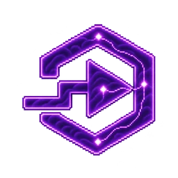
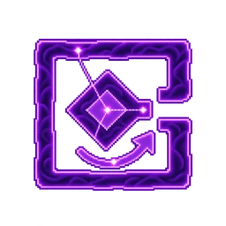
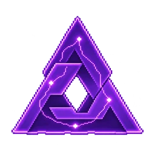

01 / REASONIntent → clarity
Find the
real question.
Turn a tangled ambition into a clear goal. Explore the constraints before reaching for a tool.
Explore reasoning skillsI turn ambitious business strategies into working AI systems, agentic workflows, and automation.
I’m Boom. AI Engineer & Solutions Architect.
Based in Bangkok. Built around your business.
Three connected stages. Scroll through them.
Turn a tangled ambition into a clear goal. Explore the constraints before reaching for a tool.
Explore reasoning skillsBring the tools, workflows and people together. Build a focused system around the outcome, not the other way around.
Try the workbenchCheck the result against evidence. Keep permissions explicit, decisions inspectable and people in control.
Explore verification skills
MAKE IT REALWhat do you wish your business could do?
Pick a challenge. Walk through a possible system. Leave with a useful starting brief.
Scroll to unfold the system. Or drag the control to explore.
Illustrative architecture. No AI request is sent.
One system. Three layers.Keep dragging to reveal the next connection.
A small, deliberate first step
can unlock a much bigger idea.
“Could routine requests move forward without someone copying the same information between tools?”
Select a step to see the thinking behind it.

Collect a request from an approved form or inbox. Keep its source, owner, and required fields together.
Constraint discovery34 connected skills for reasoning, building and checking the work. Explore the ideas behind the symbols, and where they can help.
Find your next move.
Tap a symbol. Change perspective.Coordinate tools around a shared goal.
Try a broader word, such as “plan”, “evidence” or “workflow”.
A look inside the framework.
These are capabilities to explore, not tools running in this page.
I work where business strategy, software architecture and AI engineering meet.

Turn a business goal into a clear system design. Define what to build, what to connect, and how to know it is working.
Business goals, technical decisions, practical delivery.
Design AI agents and tool orchestration around real tasks, with clear permissions, human oversight and useful evaluation.
AI agents, LLM evaluation, guardrails and integrations.
Connect the steps between systems so repetitive work becomes easier to manage, with validation, logs and a way for people to step in.
Workflow automation, software integration and production thinking.
An engineer’s rigor.
A builder’s curiosity.
I’m an AI Engineer and AI Solutions Architect in Bangkok, and the creator of HolyMind Framework.
My work starts with an ambitious business question and turns it into something that can be designed, implemented and tested. The framework brings that way of thinking together: understand the goal, connect the capabilities, and check the result.
ทำให้กลยุทธ์ธุรกิจที่ดูเป็นไปได้ยาก กลายเป็นระบบ AI และ Automation ที่ออกแบบและนำไปใช้งานได้จริง
Find me across platforms as @holyboom.
Especially the one you haven’t figured out
how to make possible yet.